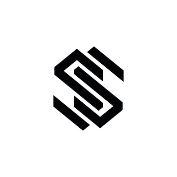

<nav class="topnav">
	<div style="display: flex; align-items: center; gap: 1rem;">
		<div class="logo" style="margin-right: 0.5rem;">
			
		</div>
		<button id="dark-mode-toggle" aria-label="Toggle dark mode" class="switch">
			<span class="switch-track">
				<span class="switch-thumb" id="dark-mode-thumb">
					<span id="dark-mode-icon" style="font-size: 2rem;">☀️</span>
				</span>
			</span>
		</button>
		<button id="light-cursor-toggle" aria-label="Toggle light effect" style="background:none;border:none;cursor:pointer;font-size:2rem;outline:none;margin-left:0.5rem;">🔦</button>
	</div>
	<nav>
		<ul>
			<li><a href="#About Me">About Me</a></li>
			<li><a href="#projects">Projects</a></li>
			<li><a href="#contact">Contact</a></li>
			<!-- <li><a href="/resume" target="_blank">Resume</a></li> -->
		</ul>
	</nav>
</nav